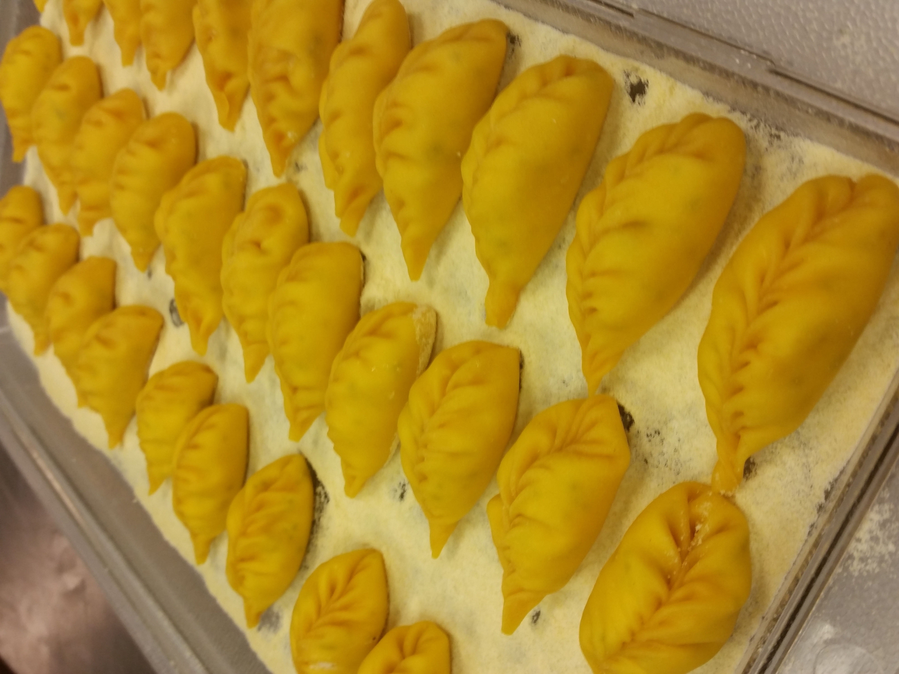
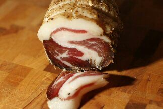
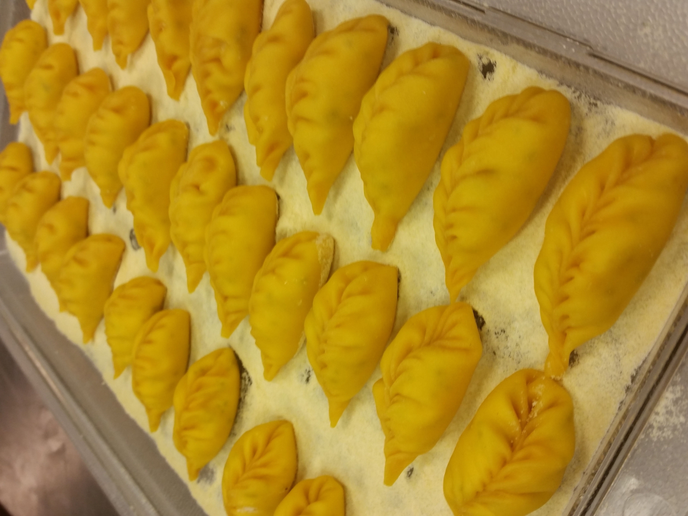
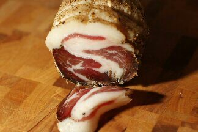
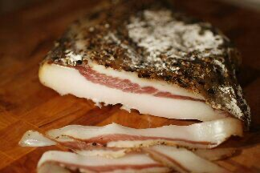
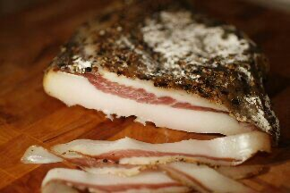

I'm from Los Angeles but currently living in the Detroit area of
Michigan. That's a good question.
For the past 20+ years I have
worked as a professional Chef. At my pinnacle, I was a Sous Chef for
Chef Thomas Keller at his Bouchon Bistro in Beverly Hills
California. I have since fallen out of love with the culinary
profession and am pivoting to Software Engineering. A "Mid-Life
Crisis" if you will.
I am excited to see what more this new
profession has to offer...
gebhardt.steven3@gmail.com
About Me:
-
Projects
-
Interests


 





 
